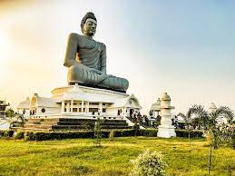
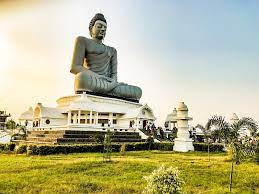
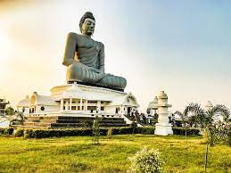
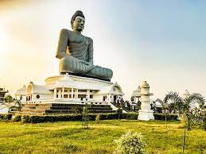

The capital is Amaravati
 



Andhra Pradesh, state of India, located in the southeastern part of the subcontinent. It is bounded by the Indian states of Tamil Nadu to the south, Karnataka to the southwest and west, Telangana to the northwest and north, and Odisha to the northeast. The eastern boundary is a 600-mile (970-km) coastline along the Bay of Bengal. Telangana was a region within Andhra Pradesh for almost six decades, but in 2014 it was carved off to form a separate state. The capital of both Andhra Pradesh and Telangana is Hyderabad, in west-central Telangana.
The state draws its name from the Andhra people, who have inhabited the area since antiquity and developed their own language, Telugu. Andhra Pradesh came into existence in its present form in 1956 as a result of the demand of the Andhras for a separate state. Although it is primarily agricultural, the state has some mining activity and a significant amount of industry. Area 106,204 square miles (275,068 square km). Pop. (2011) 84,665,533.
Amaravati, also spelled Amaravathi, village, central Andhra Pradesh state, southern India. It is situated on the Krishna River, about 18 miles (29 km) west-northwest of Vijayawada and 20 miles (32 km) north-northwest of Guntur.